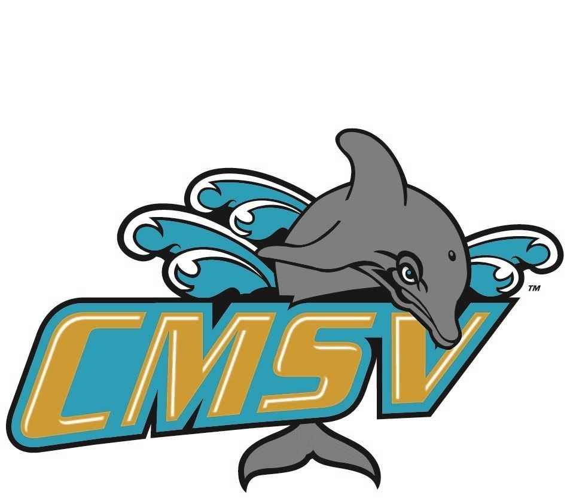

bact to index
Newyork
Vincent(city in newyork)
Mascot:Vinny the Dolphin
the mascot of College of Mount Saint Vincent
Since mythical times, the Dolphin has been considered the most intelligent of water-dwelling animals because of their ability to communicate via a language. Contrary to popular belief, the nickname, "Dolphins" was not selected because of the proximity of the Mount Saint Vincent campus to the Hudson River.
Those elected to The Dolphins received such an honor because of demonstrated character, loyalty, cooperation, and participation in school activities.
Mount Saint Vincent is one of only five NCAA member institutions that utilize the Dolphin mascot.
The selection of the new Brand was the latest step in the evolution of the Mount Saint Vincent Dolphin.
